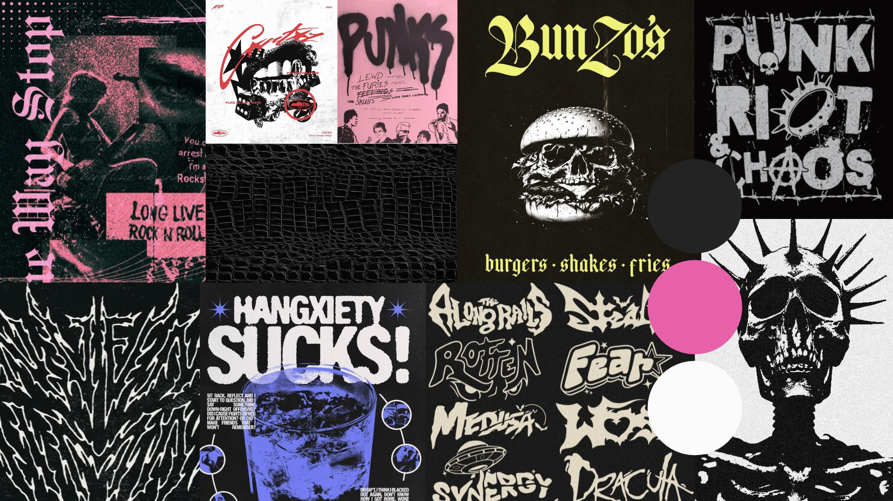
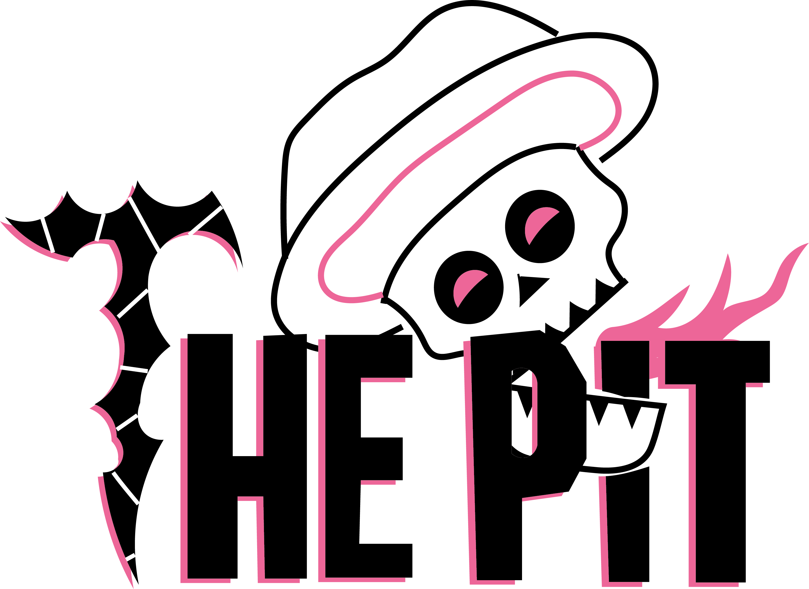
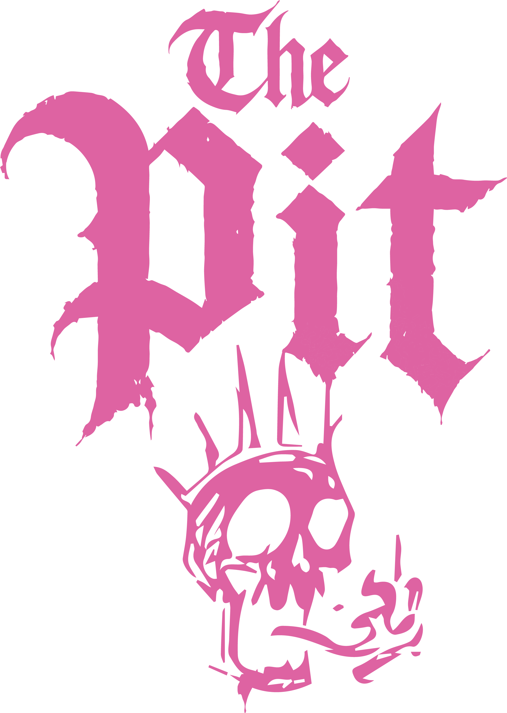
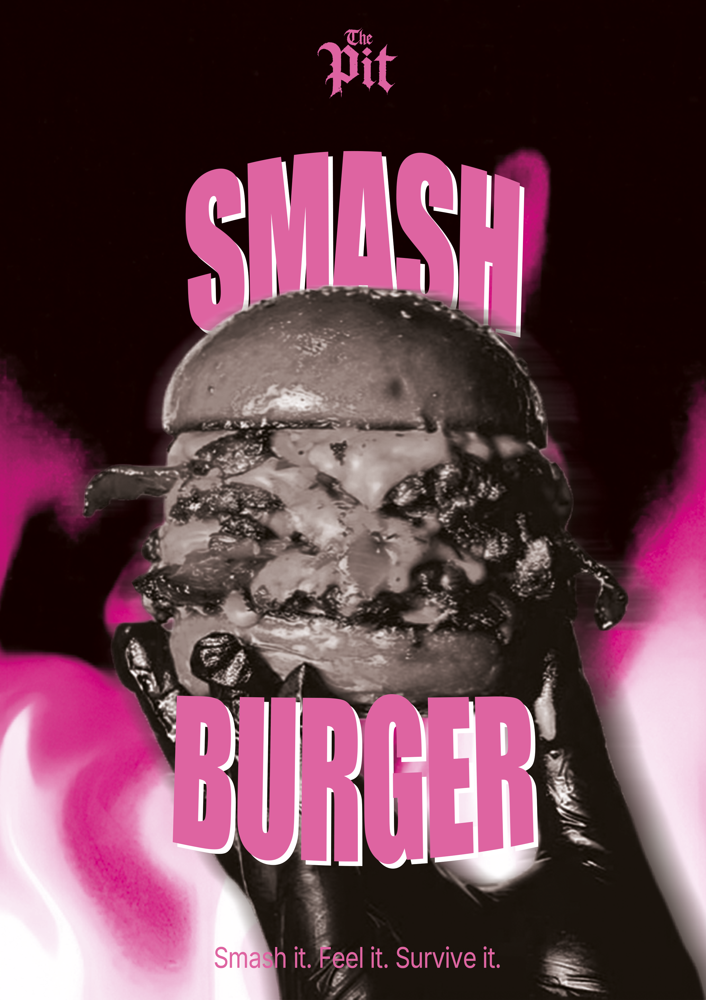

Contexte du projet ✧˖°.
‧˚ʚ Ce projet consistait à imaginer et concevoir une chartre graphique complète de "The Pit", un concept de restaurant fictif axé sur la culture street-food, le style punk et les Smash Burgers. Allant du logotype à l'univers graphique, l'objectif était de scénariser visuellement un univers percutant, mémorisable et décalé, capable de s'imposer sur un marché très concurrentiel.
‧˚ʚ Ce projet m'a permis de développer mes compétences en direction artistique, en design de marque (branding) et en création d'univers visuel. J'ai renforcé ma maîtrise technique d'Adobe Photoshop pour la mise en page d'une affiche et la création de mockups, ainsi que ma capacité à traduire une idée conceptuelle en une identité visuelle cohérente et déclinable.
Démarche & Réalisation ✧˖°.
‧˚ʚ La démarche créative a débuté par une phase de recherche et d'inspiration avec la conception d'un moodboard sur Canva. J'ai ensuite développé plusieurs pistes de logos sur Adobe Illustrator. J'ai fini par sélectionné le plus percutante pour en détailler la charte graphique (choix typographique, palette chromatique emblème, logotype, règles d'usage). Enfin, j'ai imaginé l'univers graphique global de "The Pit" à travers une affiche promotionnelle et de mockups professionnels
Rendus ✧˖°.

Moodboard avec toutes mes inspirations. Utilisation de Canva.

Première proposition de logo que je n'ai pas gardé car le rendu manquait d'impact visuel nécessaire pour traduire pleinement l'esthétique punk et l'énergie brute recherchées pour l'identité du restaurant. Utilisation d'Adobe Illustrator.

Logo finale pour la marque "The
Pit". Le rose vient casser les codes sombres du punk avec une touche pop, apportant un dynamisme
visuel percutant qui attire immédiatement l'œil. De plus, L'utilisation d'une typographie
gothique renforce l'esthétique underground du concept, affirmant le caractère brut de la marque.
Utilisation d'Adobe Illustrator.


Mockups pour imaginer la carte de fidélité et l'enseigne lumineuse extérieure du restaurant. Utilisation d'Adobe Photoshop.

Affiche A2 imaginée pour
l'enseigne. Mon visuel met en vedette le smash burger, burger phare du fast-food. Celui-ci est
encadré par une fumée rose toxique et tenue par des mains gantées de noir, créant une esthétique
underground et mémorisable. La police massive du texte « SMASH BURGER » encadre le produit et
impose une force visuelle immédiate.
Utilisation d'Adobe Photoshop.